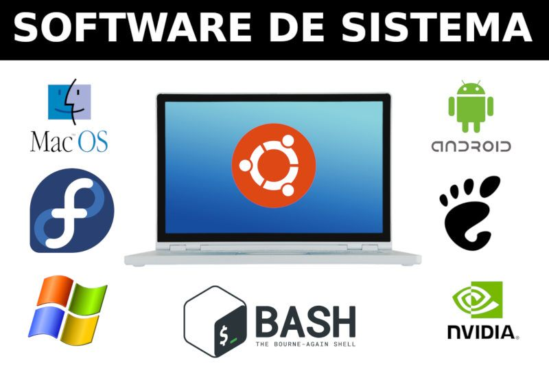

- Software de sistema
- Software de aplicação
- software de programação
- Software de segurança
- Software de bases de dados
- Software de redes
- Software educacional
- Software de entretenimento
- Software de gestão empresarial
- Software de design assistido por computador (CAD)
o que é um software?
Software é uma sequência de instruções escritas para serem interpretadas por um computador para executar tarefas específicas. Também pode ser definido como os programas, dados e instruções que comandam o funcionamento de um computador, smartphone, tablet e outros dispositivos eletrônicos.
Software de sistema
Software de sistema ou programa de sistema é o software projetado para fornecer uma plataforma para outro software. [1] Exemplos de software de sistema incluem sistemas operacionais como macOS, Ubuntu (uma distribuição Linux) e Microsoft Windows, software de computação científica, mecanismos de jogos, automação industrial e aplicativos de software como serviço
windows, Androids, IOS.
Software de aplicação
Na computação, software aplicativo, programas aplicativos ou em alguns casos aplicativos são entendidos como o conjunto de programas de computador geralmente instalados no sistema pelo usuário e projetados para realizar um objetivo específico e específico, de natureza recreativa, instrumental, comunicativa, informativo, etc.
Alguns exemplos populares de software de aplicativo são: 1. Google Chrome. Este é o nome deste navegador de Internet projetado e publicado pela Google Inc. , e distribuído de forma totalmente gratuita na web.
software de programação
Softwares de programação são programas e ferramentas que são usados para criar outros programas e aplicativos, ou seja, são usados para criar outros softwares. São programas que auxiliam na criação e desenvolvimento de aplicativos, através do conhecimento em relação às linguagens de programação existentes.
Todos os programas existentes vêm de softwares de programação, e cada software desse tipo permite que você “escreva” uma linguagem ou protocolo diferente, embora muitos, é claro, sejam equivalentes a poliglotas. Alguns exemplos desse tipo de software são: QBasic, Visual Pro, C ++, Java script, etc.
Software de segurança
A principal função de um software de segurança é centralizar gravação, gerenciamento e o controle de várias câmeras em um único sistema.
O Norton 360 Deluxe tem um dos melhores mecanismos antivírus do mercado. Combinando bancos de dados de malware conhecidos com inteligência artificial e aprendizado de máquina, ele obteve taxas de detecção de 100% em todos os meus testes.
Software de bases de dados
O software de banco de dados é usado para criar, editar e manter arquivos e registros de banco de dados, facilitando a criação de arquivos e registros, entrada de dados, edição, atualização e relatórios de dados.
Alguns exemplos de softwares de bancos de dados populares ou DBMSs incluem MySQL, Microsoft Access, Microsoft SQL Server, FileMaker Pro, Oracle Database e dBASE. O que é um MySQL Database? MySQL é um sistema de gerenciamento de banco de dados relacional de código aberto baseado em SQL.
Software de redes
Uma Rede Definida por Software (Software Defined Network ou SDN ou Rede SDN) é uma abordagem de arquitetura de rede que permite que os gerentes de TI usem software para realizar gerenciamento de rede centralizado, melhorando a flexibilidade e a agilidade das operações.
piceworks IT Desktop ... NetLimiter Monitor ... Network Notepad ... Advanced IP Scanner ... Advanced Net Tools (ANT) ... DreamSys Server Monitor ... NetBrute Scanner ...
Software educacional
O software educacional é uma solução completa para instituições de ensino de todos os portes e segmentos. Trata-se de um sistema que oferece controle total sobre as atividades da instituição e de seus colaboradores.
Tutoriais, programação, aplicativos, exercícios e práticas, multimídia e Internet, simulação e modelagem e jogos.
Software de entretenimento
Há uma infinidade de jogos de computador disponíveis para idosos, adultos e crianças. Fabricantes de videogames como a Sony e a Microsoft também entraram no mercado, oferecendo a capacidade de conectar computadores e máquinas de vídeo para que você possa jogar com ou contra outros usuários online. Vídeos gratuitos ou para pagar pelo uso estão disponíveis no YouTube, ou você pode pagar uma taxa de assinatura mensal nominal para o Netflix e assistir a filmes online. Jogos também são considerados software de entretenimento.
Exemplos: The Sims; Candy Crush; League of Legends.

Software de gestão empresarial
O software de gestão empresarial também é conhecido como ERP, sigla para Enterprise Resource Planning, em português “sistema integrado de gestão empresarial”. A ferramenta pode ser implementada em todos os setores de uma empresa e otimizar processos para tornar a rotina de trabalho mais eficiente.
STRATWS One, Conta Azul, QuickBooks, Granatum, Trello, Agendor e Tiny ERP.
Software de design assistido por computador (CAD)
O Projeto Auxiliado por Computador (CAD) é o uso de programas de computador para criar, modificar, analisar e documentar representações gráficas bidimensionais ou tridimensionais (2D ou 3D) de objetos físicos como alternativa para rascunhos manuais e protótipos de produtos.
AutoCAD. É utilizado principalmente para a elaboração de peças de desenho técnico em duas dimensões e para criação de modelos tridimensionais. ... Inventor CAM. ... SketchUp. ... SolidWorks. ... 3DS Max. ... Maya. ... Revit. ... Civil 3D.

Windows 1.0
A história começa antes dele, no MS-DOS. Em 1981, a Microsoft iniciou o desenvolvimento de um software de interface gráfica, que posteriormente veio a se tornar o Windows. Quando finalmente lançado, em 20 de novembro de 1985, o Windows 1.0 era apenas um software de interface bidimensional para facilitar o uso do sistema operacional de computadores IBM da época.

Windows 2.0
O Windows 2.0 chegou ao mercado em dezembro de 1987 e, tanto como o seu predecessor quanto o seu sucessor, usava uma estrutura de computação em 16 bits. Ele apresentou melhorias na interface, como a possibilidade de sobrepor janelas de programas, atalhos de teclado e suporte a VGA.

Windows 3.0
Sucessor do Windows 2.0, que trouxe poucas alterações em relação ao primeiro, o 3.0 foi lançado em 1990 com melhorias de memória. Ele também se destacou pelo visual mais limpo, melhor organização de arquivos e apresentou ao mundo o Campo Minado, que viria a ser um destaque nos computadores pré-internet.

Windows 95
Considerado um dos sistemas operacionais mais importantes da história, o Windows 95 abriu uma nova era para a Microsoft. Ele foi programado em 32 bits e trouxe melhorias que incluíam o sistema plug and play, recursos de acessibilidade e o navegador Internet Explorer. Lançado em agosto de 1995, o sistema foi o primeiro com o menu Iniciar, que permanece até hoje, e foi o responsável por ajudar o computador a se tornar um item popular nas casas das famílias do mundo todo.

Windows 98
O Windows 98 aprofundou a revolução que o seu antecessor começou. Disponibilizado em junho de 1998, ele era mais estável, tinha suporte a mais de um monitor e componentes USB, particionamento do HD, serviço Outlook de e-mail, modo de hibernação e mais. No mundo todo, ele foi o primeiro contato de muita gente com o PC, já que ainda estava em muitas máquinas mesmo após a virada do século.

Windows 2000
O Windows 2000 foi lançado em fevereiro de 2000 e consolidou o fim definitivo da nomenclatura "NT". O Windows NT, que começou a ser disponibilizado em 1993, era voltado para usuários corporativos, servidores e workstation, e não para o público geral. Por causa disso, sua menção é importante, além de ter trazido recursos importantes e novos sistemas de segurança.

Windows XP
O Windows XP foi lançado em outubro de 2001 e à época era bastante inovador, principalmente no quesito visual. Ele apostou em um menu Iniciar verde e barras azuis que se tornaram bastante populares entre os usuários. Entre as várias novidades que ele apresentou em suas versões, havia a opção de alternância de contas de usuários sem fechar arquivos abertos, suporte para DSL e wireless. Ele popularizou programas do Windows Media Player, já que CDs poderiam ser lidos pelos drives e tocados no programa. Seu wallpaper, uma fotografia de planícies na Califórnia, tornou-se uma das imagens mais famosas da era da internet.

Windows Vista
O Windows Vista teve um hiato bastante grande em relação ao anterior, se desconsiderarmos as atualizações e novas versões do XP. Ele foi lançado em novembro de 2006, apresentando uma nova estética de janelas transparentes e melhores recursos de segurança. Apesar disso, ele não foi tão bem recepcionado porque muitos usuários reclamavam que ele deixava o computador lento, o que fez muita gente continuar usando o XP por mais um bom tempo.

Windows 7
Lançado em julho de 2009, o Windows 7 foi recepcionado de maneira um pouco melhor na comparação com o Vista e melhorou tanto o esquema visual quanto o desempenho do sistema operacional. Ele também se destacou por apresentar recursos como suporte a telas touch screen e multi-touch, leitura de Blu-ray, Windows Defender, modo Windows XP e mais.

Windows 8
Apesar de também não ter sido muito popular, o Windows 8 trouxe mudanças que podem ser vistas até hoje no software da Microsoft. Ele foi lançado em outubro de 2012 e remodelou por completo a interface do sistema operacional, trazendo um novo sistema de widgets, janelas retangulares e a remoção do clássico menu iniciar, que foi bastante polêmica.

Windows 10
O software mais recente da Microsoft foi lançado em julho de 2015. Ele trouxe de volta o menu Iniciar e tem como um dos principais diferenciais o foco multimídia, que pode ser visto na integração com o Xbox, notebooks e tablets. Outra grande novidade que ele apresentou foi a assistente virtual Cortana.

Windows 11
Nesta quinta-feira (24), a Microsoft apresentou o futuro do seu produto mais popular. Apesar de ter sido anunciado hoje, ele será lançado no final de 2021 e chegará em uma atualização gratuita para quem tiver a versão anterior. O sistema operacional terá várias novidades, incluindo um visual mais moderno, mais segurança e velocidade, bem como um novo método de organização de janelas. Além disso, pela primeira vez na história, aplicativos Android estarão presentes na Microsoft Store, o que marcará o início de uma nova era de integração entre ecossistemas de apps.

Linux Mint
Linux Mint é uma distribuição Linux criada a partir de uma comunidade baseada no Ubuntu. É amada por pessoas usuárias casuais e profissionais na área da tecnologia. Mesmo abandonado o suporte a versão 20 do Snap, o Mint ainda é bem popular.

Linux Ubuntu
Desenvolvido por uma empresa chamada Canonical, o Ubuntu é baseado em um dos muitos derivados do Linux Debian. Esse software chegou ao mercado em 2004. As pessoas programadoras na época perceberam os destaques do sistema e sua facilidade na programação. A interface de linha de comando permitia que fosse usada uma sintaxe mínima para escrever programas. O Ubuntu tem três versões, todas desenvolvidas para diferentes propósitos. Ubuntu é a base das seguintes distribuições: Lubuntu Kubuntu Linux Mint O Ubuntu é o melhor tipo de sistema operacional para pessoas que estão começando no mundo do Linux. Podemos começar utilizando os aplicativos mais comuns e, com o decorrer do tempo, aprimorar o uso.

Linux Deepin
Deepin é uma distribuição baseada em Debian (era baseada em Ubuntu até a versão 15 lançada no final de 2015) que tem como objetivo fornecer uma interface elegante, confiável e amigável. Ele não inclui apenas o melhor que o mundo de código aberto tem a oferecer, mas também criou seu próprio ambiente de área de trabalho chamado DDE ou Deepin Desktop Environment, que é baseado no kit de ferramentas Qt 5. Deepin concentra muito de sua atenção no design intuitivo. Seus aplicativos desenvolvidos internamente, como Deepin Software Center, DMusic e DPlayer, são feitos sob medida para pessoas usuárias médias. Por ser fácil de instalar e usar, o deepin pode ser uma boa alternativa do Windows para uso doméstico e no escritório.

Kali Linux
Offensive Security é a empresa responsável pelo Kali Linux. Ele por si só é uma distro Linux baseada em Debian. Foi projetado para ajudar principalmente profissionais da área de segurança com seus inúmeros testes. Vem com ferramentas como: Nmap Metasploit Framework Maltego Aircrack-ng Especialistas em segurança cibernética e estudantes são o alvo principal do Kali Linux. Principalmente, porque o Kali disponibiliza certificações que são reconhecidas pelo mercado afora, como a Kali Linux Certified Professional e Penetration Testing with Kali.

Manjaro Linux
Manjaro Linux é um sistema operacional rápido, amigável e voltado para desktop baseado no Arch Linux. Os principais recursos incluem processo de instalação intuitivo, detecção automática de hardware, modelo de lançamento estável, capacidade de instalar vários kernels, scripts Bash especiais para gerenciamento de drivers gráficos e extensa configurabilidade de desktop. O Manjaro Linux oferece o XFCE como as principais opções de desktop, bem como KDE, GNOME e uma edição minimalista da Net para pessoas usuárias mais avançadas.

Linux Debian
Debian é a distribuição mais antiga e mais popular do Linux. Como qualquer outro distro de peso, fornece uma ambientação muito agradável e rápida. Atualmente, sua última versão é a 11, que também é chamada de Bullseye. O projeto como um todo disponibiliza um monte de pacotes de software, e suporta praticamente todos os dispositivos de computadores da arquitetura recente. As três principais branchs de desenvolvimento do Debian são: Estável Teste Instável Sua versão estável é a recomendada para servidores e usuários desktop. Isso porque é mais estável e confiável, raramente você vai precisar perder o seu tempo tentando arrumar algum bug. Normalmente essa é a versão que você instala no seu computador.

Puppy Linux
Puppy Linux é mais uma distribuição Linux. A diferença aqui é que o Puppy é extraordinariamente pequeno, mas cheio de recursos. O Puppy inicializa em um ramdisk e, ao contrário das distribuições de live CD que tem que extrair coisas do CD, ele carrega na RAM. Isso significa que todos os aplicativos começam em um piscar de olhos e respondem à entrada instantaneamente. O Puppy Linux tem a capacidade de inicializar através de um cartão flash ou qualquer dispositivo de memória USB, CD ROM, disco Zip ou LS / 120/240 Superdisk, disquetes, disco rígido interno. Ele pode até usar um CD-RW / DVD-RW formatado em várias sessões para salvar tudo de volta no CD / DVD sem a necessidade de nenhum disco rígido.

Linux OpenSUSE
O OpenSUSE é mais uma das distribuições Linux que tem como objetivo fornecer uma interface moderna e rápida para pessoas usuárias de desktop e desenvolvedoras de todo mundo. São dois ramos de desenvolvimento principais: SUSE Leap, que é a versão estável e que é voltada para as pessoas usuárias, como também para as pessoas desenvolvedoras. Tornando a escolha perfeita para quem quer ajudar no desenvolvimento de código aberto. Em contrapartida, temos o SUSE Tumbleweed, que seria a versão de teste contínua com as mais recentes versões de software e IDEs. O TumbleWeed é fácil para qualquer pessoa usuária avançada ou desenvolvedora de software, graças principalmente ao seu grande número de pacotes disponíveis. O seu gerenciador de pacotes é o Yast e é muito recomendável para que você administre os seus programas e desenvolva aplicativos com ele.

Linux Lite
Linux Lite é uma distribuição Linux amigável para iniciantes baseada no lançamento de suporte de longo prazo (LTS) do Ubuntu e utilizando o desktop XFCE. O Linux Lite é voltado principalmente para pessoas usuárias ativas do Windows. O objetivo é fornecer um conjunto completo de aplicativos para auxiliá-las em suas necessidades diárias de computação, incluindo um pacote de escritório completo, reprodutores de mídia e outros softwares diários essenciais.

MX Linux
MX Linux é uma distribuição Linux feita para desktop baseada na branch “Stable” do Debian e é um empreendimento cooperativo entre o antiX e as antigas comunidades MEPIS Linux. Utiliza o XFCE como a área de trabalho padrão (com edições separadas do KDE Plasma e Fluxbox também disponíveis), é um sistema operacional de peso médio projetado para combinar uma área de trabalho elegante e eficiente com configuração simples, alta estabilidade e desempenho sólido.

Linux CentOS
O Linux CentOS é mais um sistema operacional gratuito que tem como objetivo criar um ecossistema de código aberto confiável. Ele é baseado no RHEL, e é uma das alternativas do Red Hat Enterprise Linux por ser gratuito. A sua última versão estável é a 8.5.2111 e oferece muita confiança e estabilidade por utilizar o RHEL. Permitindo que as pessoas usuárias aproveitem todas as atualizações gratuitas.

Arch Linux
Arch Linux é a distribuição que foi projetada para pessoas usuárias avançadas ou especialistas em Linux. Sendo possível configurar e personalizar o sistema da maneira que a pessoa usuária quiser. Podemos dizer também que o Arch é voltado para pessoas que gostam de ter controle sobre o seu sistema operacional. O sistema de versionamento do Arch é atualizado constantemente, ou seja, é contínuo, e se for necessário, você consegue atualizar todos os pacotes pelo terminal. É utilizado o gerenciador de pacotes Pacman e também temos o AUR (Arch User Repository) que é a comunidade detentora dos pacotes de software. A sua versão mais recente é a 2022.03.01.

Linux Zorin OS
Zorin OS é uma distribuição Linux baseada no Ubuntu projetada especialmente para iniciantes no Linux. Possui uma interface gráfica de usuário semelhante ao Windows e muitos programas semelhantes aos encontrados no Windows. O Zorin OS também vem com um aplicativo que permite executar vários programas do Windows. O objetivo final da distribuição é fornecer uma alternativa Linux ao Windows e permitir que as pessoas usuárias do Windows aproveitem todos os recursos do Linux sem complicações.

Linux Slackware
O lançamento oficial do Slackware Linux foi feito por Patrick Volkerding e é um sistema operacional Linux avançado. Foi projetado com o objetivo de ser um sistema fácil de usar e é principalmente estável. Inclui a maioria dos aplicativos mais recentes enquanto tenta manter um senso de tradição, proporcionando simplicidade e facilidade de uso junto com a flexibilidade e poder, o Slackware tenta trazer o melhor de todos os mundos. O Slackware Linux oferece a pessoas usuárias novas e experientes um sistema completo, equipado para servir em qualquer capacidade, desde uma estação de trabalho pessoal a um servidor em uma sala de máquinas. Um leque completo de ferramentas de desenvolvimento, editores e bibliotecas atuais estão incluídos para quem deseja desenvolver ou compilar programas nele.

Oracle Linux
O Oracle Linux é uma distribuição Linux para a classe empresarial e é suportada pela Oracle que a constrói a partir dos pacotes do Red Hat Enterprise Linux (RHEL). Alguns dos recursos especiais do Oracle Linux incluem um kernel Linux desenvolvido sob medida e rigorosamente testado denominado “Oracle Unbreakable Kernel“, forte integração com os produtos de hardware e software da Oracle, incluindo a maioria dos aplicativos de banco de dados e todas as outras funcionalidades disponíveis no mercado.

Elementary OS
Elementary OS é uma distribuição de desktop baseada no Ubuntu. Alguns de seus recursos mais interessantes incluem um ambiente de área de trabalho personalizado chamado Pantheon e muitos aplicativos personalizados, incluindo fotos, músicas, vídeos, calendário, terminal, arquivos e muito mais. Ele também vem com alguns aplicativos familiares como o navegador Epiphany e um fork do Geary Mail.

Linux Fedora
Fedora dentre as distribuições linux é a que mais se destaca por ser realmente simples e prover uma grande quantidade de aplicativos previamente instalados. Isso a torna uma distribuição muito amigável e que facilita a entrada de novas pessoas usuárias. É flexível e poderoso, baseado no Red Hat, também é utilizado como ambiente de teste da transição do Red Hat. Foi feito tanto para sistemas de desktop, servidores e ecossistemas IoT. É utilizado principalmente para fins de desenvolvimento e muito útil para pessoas desenvolvedoras e estudantes.

Tails Linux
The Amnesic Incognito Live System (Tails) é uma distro baseada em Debian com o objetivo de fornecer anonimato completo na Internet. O sistema vem com várias aplicações de Internet, incluindo um navegador web, cliente IRC, cliente de e-mail e mensageiro instantâneo, todas pré-configuradas com a segurança em mente e com todo o tráfego anonimizado. Para conseguir isso, o Incognito usa a rede Tor para dificultar o rastreamento do tráfego da Internet.

Linux Raspbian
Raspberry Pi OS (anteriormente Raspbian) é um sistema operacional gratuito baseado no Debian e otimizado para o hardware do Raspberry Pi (a arquitetura do processador ARMHF). Nesse sistema, temos um pouco mais de 35.000 pacotes pré-compilados em um formato agradável para fácil instalação em um Raspberry Pi. A primeira versão foi desenvolvida em junho de 2012, mas a distribuição continua ativa, desenvolvida com ênfase na melhoria da estabilidade e desempenho de todos os pacotes Debian possíveis. Embora o Debian produza uma distribuição para a arquitetura arm, ela é compatível apenas com versões posteriores à usada no Raspberry Pi (CPUs ARMv7-A e superiores vs CPU ARMv6 do Raspberry Pi).

Linux Pop!_OS
Pop! _OS é uma distribuição Linux baseada no Ubuntu que utiliza o GNOME como sua área de trabalho personalizada. Pop Linux Distribuições Pop! _OS é projetado para não ter nenhum item na área de trabalho, a fim de permitir que a pessoa usuária se concentre no trabalho. A distribuição é desenvolvida pelo varejista de computadores Linux System76.